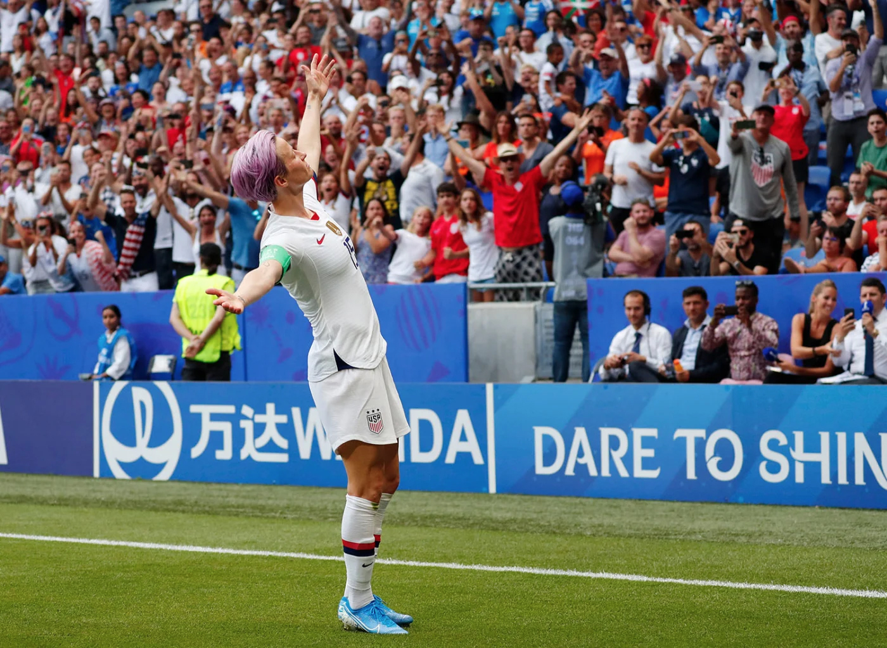
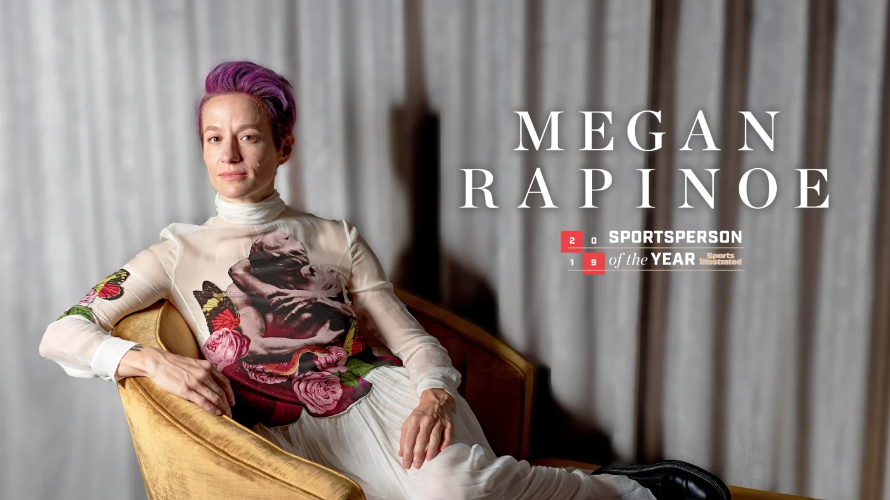

A Leader On And Off The Field
Megan Rapinoe: 2019 Sportsperson of the Year
Michael Chow-USA TODAY Sports

Megan Rapinoe. Source: SI.com
Before the final whistle, before the chants of “Equal pay!” ricocheted around Stade de Lyon, before Megan Rapinoe’s arms were filled with all the trophies a soccer player could possibly earn in one year, first came the tears.
On July 7, in the 61st minute of the 2019 World Cup final against the Netherlands, Rapinoe scored to put the U.S. up 1–0. To her, though, this was more than the goal that would win the Americans a record fourth title. It was the equivalent of flashing double-barrel middle fingers. She’d have loved to have done that just once. But, she says, “there are lines.”
The goal itself, on a penalty kick drawn by teammate Alex Morgan, was, like Rapinoe, more about brains than brawn. She reminded herself, Your opponent is more nervous than you are, then she went low and a bit right, breaking her tendency of high and left. Dutch goalkeeper Sari van Veenendaal flinched toward Rapinoe’s usual side, the net rippled, teammates swarmed and the whole scene ended with the pink-haired lesbian winger posing near the corner flag in defiance and triumph and joy: arms outstretched, chin up, head tipped just back. megan-rapinoe-the-pose
The Pose, the signature sporting image of 2019, was more than a celebration, just as Rapinoe’s goal was more than a tournament-winner. No one knew this better than Rapinoe’s mom, Denise, and fraternal twin, Rachael, who together had traversed France for a month with the U.S. team and on the day of the final were sitting just down the sideline. They were there because Megan had laid it on thick that this might be her last World Cup (she’ll reassess after the 2020 Olympics) but also because they know she can be as sensitive as she is tough, and even those who appear superhuman need support. Especially if they’ve been publicly questioned by the leader of the free world.
For 34 years, since Megan was born 11 minutes after Rachael—since they learned to play soccer together at age five, since they came out to each other as gay when they were sophomores at the University of Portland—one sister has fortified the other. In France that meant Rachael pulled Megan aside during a family visitation hour in a hotel lobby, sheltering her from all the fuss and all the paranoia from U.S. Soccer officials who feared the muscle stimulator on Rapinoe’s ailing right hamstring might tip off the world that she’d be missing the semifinal against England. It had meant, years earlier, hiding from Megan the hateful emails that came pouring into Rapinoe SC, a clinics-and-online-apparel company that the sisters run together, after Megan joined an NFL quarterback’s lonely protest during the national anthem.
555 All of which had led to this day. Rapinoe was the hero of the World Cup, achieving everything she’d ever dreamed of, but in so many ways it was unlike anything she’d imagined. And so, 16 minutes after her final goal, in her 428th minute of play over five matches, she was substituted out and sat down, just across a divider from the U.S. family seats. As the final seconds ticked off the clock, the sisters locked eyes. And they started bawling.

Megan Rapinoe is Sports Illustrated’s Sportsperson of the Year. She is just the fourth woman in the award’s 66-year history to win it unaccompanied, a feat that is both a remarkable athletic achievement and a reflection of entrenched gender biases. Rapinoe challenged perceptions of her, of female athletes, of all women. She led her teammates, three months before their tentpole tournament, to sue the U.S. Soccer Federation for equal pay; to declare in advance that they would not visit the White House when they won the Cup; to score 13 goals in a group-stage match against Thailand, without apology.
As for The Pose? “It was kind of like a ‘F--- you,’ but with a big smile and a s--- eating grin,” Rapinoe says. “You are not going to steal any of our joy.”
Yes, the U.S. women have been here before. But the ’19ers were more dominant than the team that won four years ago—they never trailed in France; they scored a record 26 goals—and they were even bolder than the ’99ers who collectively captured SI’s year-end award two decades ago. Julie Foudy, co-captain of that team, asked her old cohort Mia Hamm about the equal-pay lawsuit, “Do you think we would’ve done this?” And Foudy says they concluded, “We probably would have said, Let’s plant that flag after we’ve won. We had been socialized not to stir the pot. Which I love about Rapinoe, this freedom to speak her mind in a way we didn’t feel we had.”
Megan Rapinoe. Source: SI.com
Since bursting onto the scene with a perfect left-footed cross to Abby Wambach in the 2011 quarterfinal, Rapinoe has been a change agent for the U.S. But the meaning of that change has evolved over time. In ’19 she was the anchor of the left side, coaching up Sam Mewis and Crystal Dunn; she was the captain who walked into the locker room after a tough first half of one elimination game and declared the U.S. was playing “Awesome!”—coercing her teammates to accept said awesomeness; she was the veteran champion of equality who had history on her side when it came to persuading teammates to sue. Most of all, she was a galvanizing force on a team that is now looked up to by any woman who doesn’t want to be told she’s come far enough, who’s taking matters into her own hands. But even Rapinoe couldn’t have predicted how this year would play out.
Before the opening game in Reims, she and Morgan were sitting at their lockers. “One of us has to win the Golden Boot” for the World Cup’s top scorer, Rapinoe told her co-captain. But what she really meant was: You have to win it. Rapinoe never would have bet on herself to take that award (for which she ultimately edged out Morgan) or the Golden Ball (for MVP) or to be named FIFA’s Women’s World Player of the Year two months later. “I’m not sure I’m the best player on my own team,” she admits.
Hers is another kind of magic. Sure, she scored six times, five of those in elimination rounds. But in her three decades preparing for this stage, she never expected to have to perform while the president of her country taunted her and a nonzero percentage of Americans rooted for her to fail.
Rapinoe and her teammates were busing to their training grounds in the western outskirts of Paris on June 26, in advance of a quarterfinal against France, when Donald Trump fired his Twitter salvo. A video, recorded earlier in the year, was making the rounds; in it Rapinoe declared, “I’m not going to the f------ White House” if the U.S. wins. And now POTUS was tweeting: “. . . Megan should WIN first before she TALKS! Finish the job!” Midfielder Allie Long saw this and leaned forward in her seat, toward Rapinoe in front of her. “Pookie,” she said, “you a G.”
In so many ways. Two days later, in a game that felt more like a final, Rapinoe lined up for a fifth-minute free kick from just outside the penalty box. When she saw only two French players in the defensive wall, she said to herself, Well, thank you, and smashed a low kick that bounced through traffic into the goal. Consider The Pose (which she struck after both of her goals in a 2–1 win) her direct response to the President. Says Rapinoe, “I’m going to do me.”
Which has had costs and benefits. After celebrating the championship with teammates in New York City and then Los Angeles, Rapinoe and her girlfriend, WNBA player Sue Bird, were on their way to LAX to catch a flight home to Seattle when U.S. teammates began texting warnings: You cannot go through airport security! They were getting mobbed, even without the pink-haired national hero. Rapinoe had no idea what to do. She didn’t have the means for personal security or a private flight. In the end, her agent hastily arranged for access to a VIP entrance to the airport, something Rapinoe had never considered before.
In the months since: Michelle Obama recruited Rapinoe to join in a voter-participation initiative. Gloria Steinem, the original feminist icon, thanked Rapinoe for carrying her torch. A high school girls’ soccer team in Burlington, Vt., staged its own campaign in support of equal pay, and an 11-year-old boy in Geneva, Ill., went viral for his pink-haired Halloween costume, each inspired by Rapinoe. She has been invited to Washington by New York congresswoman Alexandria Ocasio-Cortez; talked politics on Meet the Press, Pod Save America and CNN; and turned into a coveted endorsement for the 2020 election. No, she’s not running for office anytime soon. “I don’t have plans for policies and how to implement them,” she says. “I’ll just be the jabber.” (The White House did reach out privately to the team about a visit, a U.S. Soccer rep confirms. Rapinoe says she heard about the outreach on the plane ride home from France, from USSF president Carlos Cordeiro. He suggested a visit to both the White House and Capitol Hill; Rapinoe and another player reiterated they didn’t want to meet with Trump. Rapinoe would like to visit Congress with her team, but she doesn’t think U.S. Soccer is willing to organize a trip that skips the White House, with the World Cup coming to the U.S. in 2026. The team rep says ’26 “has absolutely zero bearing” on the issue.)
Obama, AOC, CNN. . . Rapinoe has a name for all of this. Her “newfound fame.” When she travels, she enters what her teammates have dubbed “IncogPinoe” mode, often slipping on a Supreme ballcap with a hidden message stitched in white thread on white canvas: f--- you. It’s her way of poking fun at this temporary status; she knows how easily the cheers can turn to boos.
Megan Rapinoe is Sportsperson of the Year, though, not because of her newfound fame but because of how she’s handled it. She owned the biggest moment of her life and silenced all the doubts. Except, perhaps, her own.
It’s early November and Rapinoe is standing on a frosty field in Greenwich, Conn., popping cough drops to combat a cold she picked up after having spent maybe three days at home in the last month. She and Rachael held a soccer clinic in Farmingville, N.Y., last night; today they have two more sold-out sessions, 175 kids each, before Megan will rush to catch a flight to Columbus for the last national team camp of the year. Denise and the twins’ Aunt Melissa are working the check-in desk, and there’s no security here—which is fine, except when it comes to Megan separating from the crowd for a bathroom break, which proves more challenging than getting one past Van Veenendaal in Lyon.
Away from this chaos, one dad sits in the bleachers, talking on a cellphone while Rapinoe guides girls and boys through a shooting station, and his words remind an eavesdropping interloper of what preceded All of this. “. . . When Megan was kneeling,” the man says, “it was a big deal. . . .”
It’s hard to imagine now, but Rapinoe SC almost went under after Megan joined Colin Kaepernick in protesting police brutality and systemic racism by taking a knee during the national anthem in 2016. A youth club that was hosting a clinic near D.C. that fall felt compelled to request security for its event, fearful of protesters. (No protestors showed.) Enrollment and merchandise sales nosedived. “Maybe those parents are kicking themselves now,” Rapinoe shrugs.
Megan Rapinoe. Source: SI.com
In Greenwich the sun peeks out and a swarm descends on the star instructor. Rapinoe waves over some high school field hockey players who’ve been hovering nervously, while off to another side a soccer mom coaches up her young daughter to approach for a picture. (“It’s now or never!”) The girls gush thank-yous, and Rapinoe thanks them back.
Megan remembers what it was like sitting with Rachael in the Stanford Stadium stands for the 1999 Women’s World Cup semifinal, watching in awe as the U.S. beat Brazil en route to its second trophy. But, for the most part, female athletes were invisible when Rapinoe was growing up. The posters she had in her room were all of Michael Jordan. The point of these camps is not to teach the kids some magical skill that will land them on the national team. It’s to be visible. Now, gathering her campers at midfield before she leaves for Columbus, Rapinoe opens up the session to questions. Which is how we land on fear.
In the end, “it just so happens that I came back with a vengeance, better than I had ever been,” Rapinoe says. “And then it was like, Well, you are stuck with me now.”